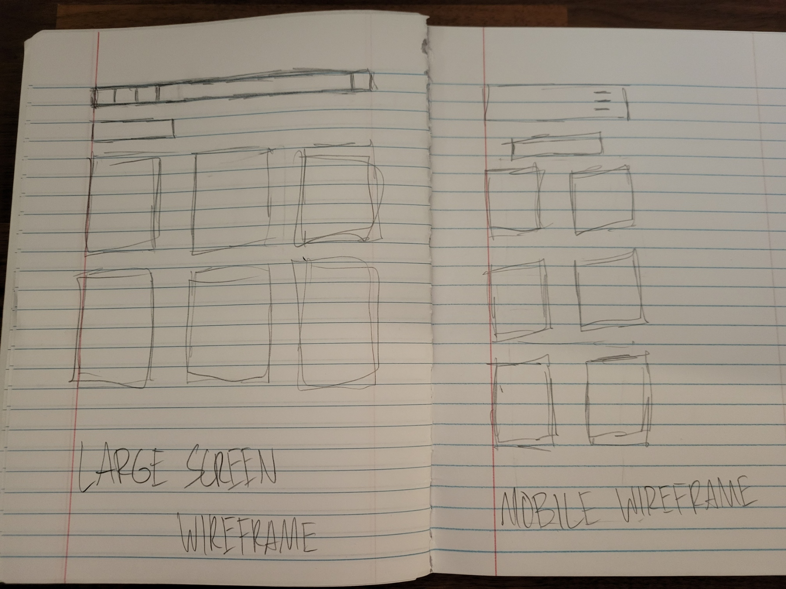

Pokemon Card Tracker Site Plan
Site Name: Pokemon Card Tracker
Site Purpose: To allow people to track and organize large pokemon card collections as well as see what cards they still need
Scenarios: How can I organize them, what kind of sets does it track, does it have more information about the sets or pokemon
Color Schema: Dark grays with light text, and accent colors that change based on which pokemon/set they're currently viewing
Typography: Poppins will be used throughout the whole site
